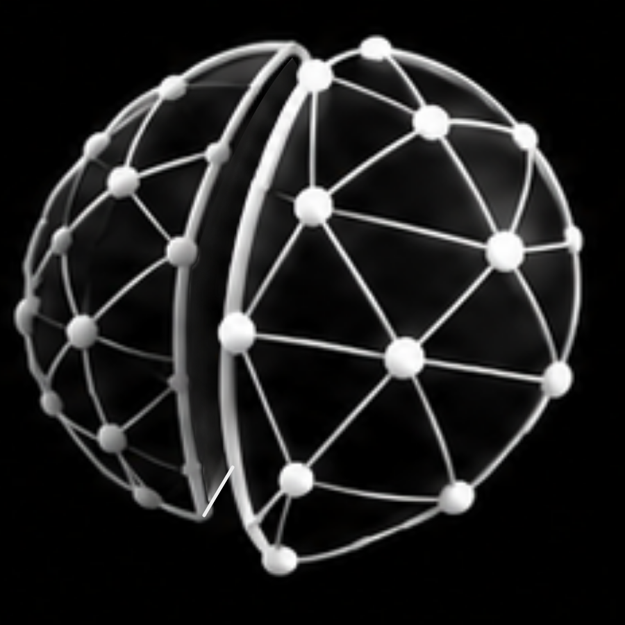
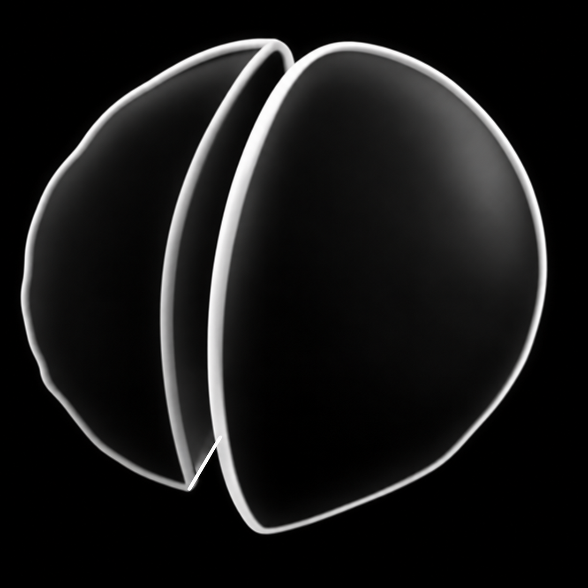

<!doctype html><html lang="en"><meta charset="utf-8"><title>Salvor Labs — XS08 outline at 128px</title><style>*{box-sizing:border-box}html,body{margin:0;background:#000;color:#ccc;font-family:Arial,sans-serif}.comparison{width:560px;padding:28px 32px 24px}header{font:12px Menlo,monospace;letter-spacing:.07em;color:#aaa;margin-bottom:22px}.row{display:flex;gap:72px;justify-content:center}.sample{display:flex;flex-direction:column;align-items:center;gap:12px}img{display:block;width:128px;height:128px}h2{font:11px Menlo,monospace;font-weight:400;margin:0}footer{margin-top:24px;text-align:center;font:10px Menlo,monospace;color:#999}</style><main class="comparison"><header>SALVOR LABS / XS OUTLINE PREVIEW</header><div class="row"><article class="sample"><h2>G08 / REGULAR · 128px</h2></article><article class="sample"><h2>XS08 / OUTLINE · 128px</h2></article></div><footer>SHAPE + GRAYSCALE GRADIENTS · GRAPH AND NODES REMOVED</footer></main></html>